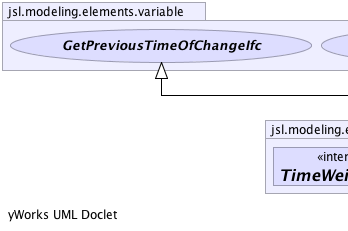
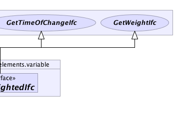

|
||||||||||
| PREV CLASS NEXT CLASS | FRAMES NO FRAMES | |||||||||
| SUMMARY: NESTED | FIELD | CONSTR | METHOD | DETAIL: FIELD | CONSTR | METHOD | |||||||||
public interface TimeWeightedIfc
|  |  |
| Method Summary |
|---|
| Methods inherited from interface jsl.modeling.elements.variable.GetWeightIfc |
|---|
getWeight |
| Methods inherited from interface jsl.modeling.elements.variable.GetTimeOfChangeIfc |
|---|
getTimeOfChange |
| Methods inherited from interface jsl.modeling.elements.variable.GetPreviousTimeOfChangeIfc |
|---|
getPreviousTimeOfChange |
|
||||||||||
| PREV CLASS NEXT CLASS | FRAMES NO FRAMES | |||||||||
| SUMMARY: NESTED | FIELD | CONSTR | METHOD | DETAIL: FIELD | CONSTR | METHOD | |||||||||